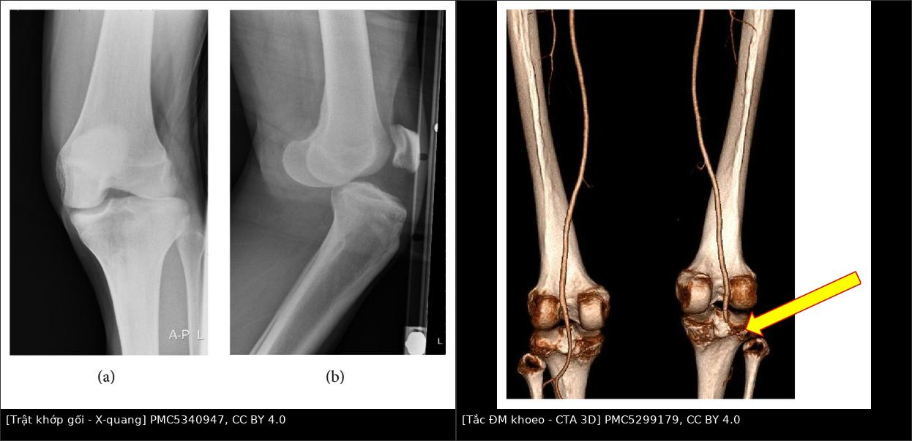
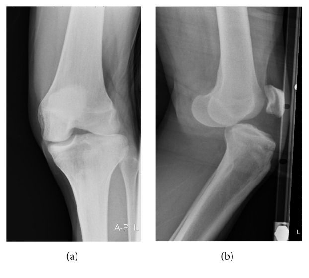
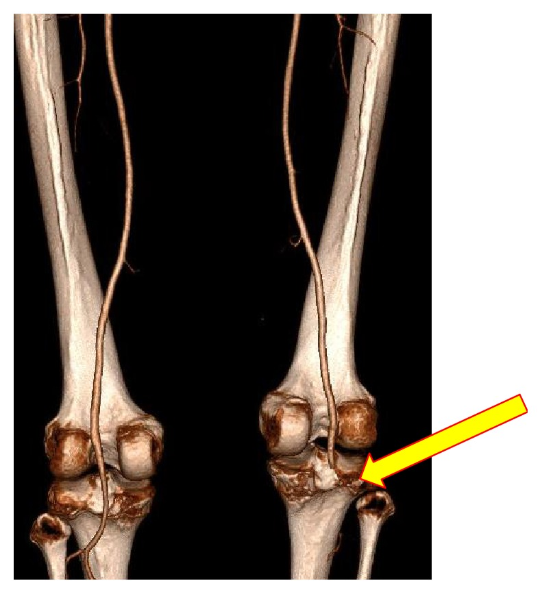
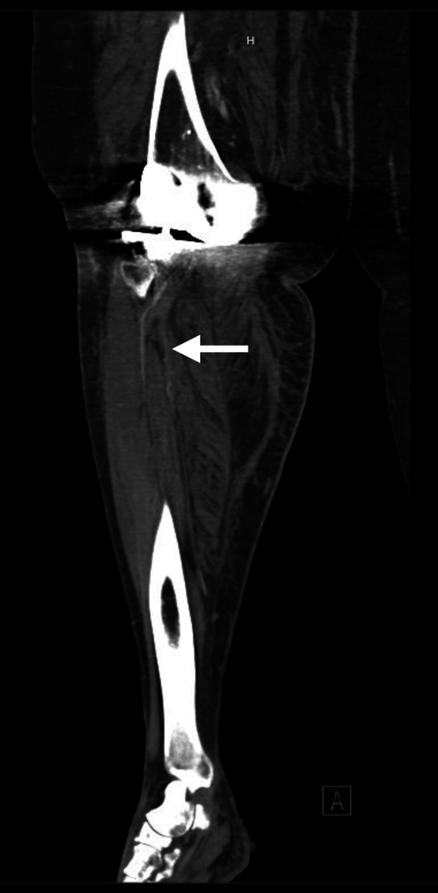
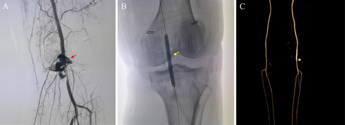

3146 — Chấn thương động mạch khoeo sau trật khớp gối / Popliteal artery injury after knee dislocation
Tags: pattern:mat-mach-chi-duoi pattern:tac-mach pattern:gia-phinh-dong-mach pattern:trat-khop vung:khop-goi vung:khoeo protocol:CTA protocol:DSA protocol:ABI score:ABI score:Schenck
Mức chắc chắn (certainty): tổng hợp y văn (literature synthesis) — ghép 4 nguồn mở: (a) bài tổng quan trật khớp gối + tiếp cận mạch chọn lọc (Douma MR, Burg MD, Dijkstra BL, Case Rep Emerg Med 2017, PMC5340947, CC BY 4.0); (b) ca tắc ĐM khoeo do rách nội mạc sau trật khớp gối hai bên (Godfrey AD, Hindi F, Ettles C, Pemberton M, Grewal P, Case Rep Surg 2017, PMC5299179, CC BY 4.0); (c) ca trật khớp gối trên khớp nhân tạo tái phát + CTA bị nhiễu (Smith TJ, Whetstone D, Cureus 2025, PMC12551768, CC BY 4.0); (d) tổng quan đa chấn thương dây chằng – mạch (Hantes M et al., EFORT Open Rev 2026, PMC13150330, CC BY-NC 4.0) + đoàn hệ 17.000 ca nội soi khớp (Xu Z et al., Orthop Surg 2025, PMC11872355, CC BY 4.0). Số nào nguồn không đưa thì ghi "chưa rõ".
Bài này trả lời 4 câu hỏi của ca "trật khớp gối, chân lạnh nhưng vẫn bắt được mạch mu chân": (1) Vì sao ĐM khoeo bị rách khi khớp trật mà mạch ngoại vi vẫn còn? (2) ABI 0,9 là ngưỡng gì — ai được chờ, ai phải chụp mạch ngay? (3) CTA đọc gì, và vì sao "CTA âm" chưa phải là hết chuyện? (4) Cửa sổ vàng để tái thông là bao lâu, khi nào phải mở cân? Đây là mặt mạch máu của khớp gối; mặt dây chằng – sụn chêm ở 360 – MRI khớp gối, mặt mạch lớn ở chi ở 3107 – Đứt động mạch dưới đòn và 3095 – Tổn thương động mạch đùi sau can thiệp.
1. Tổng quan bệnh học – cơ chế hình ảnh
1.1 Giải phẫu: vì sao đúng đoạn này bị kéo đứt
- ĐM khoeo đi từ lỗ cơ khép (adductor hiatus) xuống cung cơ dép (soleal arch) rồi chia ĐM chày trước + thân chày–mác. Hai đầu bị cố định vào cân/cơ, còn đoạn giữa bắc ngang khớp gối như một sợi dây căng giữa hai cọc.
- Khi lồi cầu xương đùi trượt khỏi mâm chày (trật khớp gối), hai điểm cố định bị kéo xa nhau 1–2 cm trong vài mili-giây → mạch đàn hồi bị căng quá giới hạn: tổn thương hay gặp nhất là rách nội mạc (intimal tear), tiếp đến đứt toàn thành, giả phình, rò động–tĩnh mạch. Trong ca PMC5299179, vạt nội mạc dài 1,5 cm + huyết khối lấp lòng; ca PMC5340947 chỉ rách dây chằng, mạch nguyên.
- Vì sao mạch mu chân vẫn bắt được: quanh gối có 5 ĐM gối (genicular) nối ĐM đùi với ĐM khoeo dưới chỗ tắc; tuần hoàn bàng hệ này đủ để duy trì mạch ngoại vi một thời gian nhưng không đủ nuôi chi lâu dài (PMC5340947). Vì vậy mạch còn ≠ mạch lành.
- Vì sao tổn thương "âm thầm" trên hình ảnh ban đầu: vạt nội mạc chưa tắc ngay; dòng máu vẫn qua được lòng thật hẹp → CTA/ABI có thể bình thường, rồi huyết khối lan trên vạt trong 2–4 ngày (PMC13150330). Đây là lý do phải khám lại + đo ABI lại chứ không chỉ dựa vào phim đầu.
1.2 Số liệu định lượng bắt buộc nhớ
| Đại lượng | Con số | Nguồn |
|---|---|---|
| Trật khớp gối / toàn bộ chấn thương chỉnh hình | 0,02–0,2% (khớp: < 0,5% ca trật khớp) | PMC13150330; PMC12551768 |
| Tổn thương mạch trong trật khớp gối | trung bình 18,4%, cao tới 33%; tùy kiểu trật 7–64%; riêng ĐM khoeo 32–45% | PMC13150330; PMC5340947 |
| Bệnh nhân có mạch mà vẫn tổn thương ĐM | 27% ca tổn thương ĐM xác nhận có mạch rõ; độ nhạy khám mạch chỉ 80%; 4% ca mạch bình thường sau nắn vẫn có tổn thương ĐM | PMC13150330; PMC12551768 |
| ABI < 0,9 | 100% ca ABI < 0,9 có tổn thương ĐM; 0% ca ABI ≥ 0,9 có tổn thương; độ nhạy 95–100%, NPV 99% | PMC12551768 (Mills 2004); PMC13150330 |
| Cửa sổ tái thông | cắt cụt 86% nếu thiếu máu > 8 giờ; cắt cụt 6% (< 60 phút) · 11,7% (1–3 giờ) · 13,4% (3–6 giờ) | PMC12551768 (Green 1977; Alarhayem 2019) |
| Mổ tái thông ĐM khoeo | cắt cụt 30%; kèm tổn thương tĩnh mạch 60%, gãy xương 50%, thần kinh 50% | PMC5299179 |
| Chụp mạch xâm lấn | âm tính giả 4%, dương tính giả 2,4–7%; CTA: độ nhạy/đặc hiệu ~100% cho tổn thương có ý nghĩa | PMC5340947 |
| Thần kinh kèm theo | 16–40%; liệt thần kinh mác chung 25–40% | PMC12551768; PMC13150330 |
| Tổn thương ĐM khoeo do nội soi khớp (bệnh viện đa trung tâm) | 0,059% (10/17.000 ca), 80% phát hiện ngay trong mổ | PMC11872355 |
| Khoảng cách ĐM khoeo – dây chằng chéo sau trên MRI | 5,4 ± 2,1 mm ở gối duỗi 0°, 7,8 ± 3,6 mm ở gối gấp 90° | PMC11872355 |
| Trật khớp gối trên khớp nhân tạo (TKA) | 0,15–0,5% ca TKA; tổn thương mạch kèm theo ~5%; tái trật 39,1% nếu chỉ điều trị bảo tồn | PMC12551768 |
- Hệ quả cho thực hành: ngưỡng sinh tử là giờ, không phải ngày; mọi bước (nắn, ABI, CTA, mổ) phải ghi giờ vào hồ sơ. Trong ca PMC5299179, bệnh nhân vào viện 1 giờ sau chấn thương, ABI 0,9 vs 0,3, lên bàn mổ 18:30 cùng ngày.
2. Mẫu hình + chẩn đoán phân biệt theo cơ chế và vị trí (Gamut)
- Theo cơ chế: trật khớp gối thật (thường tự nắn trước khi tới viện) · gãy – trật quanh gối (gãy mâm chày, đầu dưới xương đùi) · chấn thương đụng dập trực tiếp hố khoeo · y sinh (nội soi khớp, khoan đường hầm chày, cắt nang khoeo, TKA).
- Theo hình thái tổn thương mạch: rách nội mạc → huyết khối (hay gặp nhất, "âm thầm") · đứt toàn thành (chảy máu, mất mạch tức thì) · giả phình (khối đập, xuất hiện muộn) · rò động – tĩnh mạch (tiếng thổi liên tục) · co thắt (thoáng qua, không được mổ chỉ vì co thắt).
- Gamut "mất mạch chi dưới sau chấn thương gối" — gợi nhớ KNEE:
- Knee dislocation with popliteal injury (bài này) — mất mạch + trật khớp, ABI < 0,9.
- Nerve injury only (thần kinh mác chung) — bàn chân rớt, tê mu chân nhưng mạch đều; đừng quy mọi thiếu hụt cho mạch.
- Extravasation / giả phình — CTA có túi đối quang; có thể mạch vẫn đều.
- Edema – chèn ép khoang (compartment syndrome) — đau tăng khi duỗi thụ động, khoang căng; mạch có thể còn.
- Compensated collateral flow (bàng hệ gối) — mạch còn dù mạch đã tắc, đây là bẫy số 1.
- Theo vị trí tổn thương: P1 (trên khớp) – sát lỗ cơ khép; P2 (sau khớp) – ngang lồi cầu, đoạn hay bị kéo nhất; P3 (dưới khớp) – trên nguyên ủy ĐM chày trước, nơi vạt nội mạc dễ bị bỏ sót khi đọc CTA.
3. Bảng so sánh phân biệt (ma trận đối chiếu)
| Thực thể (entity) | Hình ảnh điển hình (XR/CTA/DSA) | Chốt vào (rule-in) | Chốt loại (rule-out) | Gợi ý xác nhận |
|---|---|---|---|---|
| Tắc ĐM khoeo do rách nội mạc | CTA: cụt thuốc / không ngấm thuốc đoạn P2–P3, vạt nội mạc trên MPR; DSA: hình "cụt đầu" | Mất ngấm thuốc + ABI < 0,9 + trật khớp gối | Mạch ngấm đủ tới cổ chân + ABI ≥ 0,9 → không tắc | CTA 1 mm + MPR; DSA khi can thiệp |
| Đứt toàn thành ĐM khoeo | Thoát thuốc tự do, máu tụ hố khoeo lan nhanh, mất mạch | Thoát thuốc + mất mạch + máu tụ to | Có dòng liên tục qua đoạn hẹp → chỉ rách nội mạc | CTA khẩn; mổ ngay nếu không ổn định |
| Giả phình ĐM khoeo | Túi đối quang có cổ, giữ thuốc thì muộn; có thể thấy khối 61,4 × 35,9 mm quanh mạch (PMC11872355) | Túi + cổ + đậm độ thì muộn | Không túi, chỉ phù/máu tụ không ngấm → không phải giả phình | CTA thì động–tĩnh mạch; DSA ± stent-graft |
| Rò động – tĩnh mạch | Tĩnh mạch ngấm thuốc sớm thì động mạch, tĩnh mạch nông giãn | Ngấm thuốc tĩnh mạch sớm + tiếng thổi | Không có ngấm sớm → loại | DSA, đo bão hòa O₂ tĩnh mạch |
| Co thắt mạch (vasospasm) | Hẹp dài, đều, nhẵn, hồi phục sau thuốc giãn mạch | Hẹp nhẵn + hồi phục + không rách nội mạc | Có vạt/huyết khối → tổn thương thực thể | DSA + nitrate; không mổ chỉ vì co thắt |
| Chèn ép khoang cấp | CTA mạch có thể bình thường; MRI: phù cơ, hoại tử muộn | Đau – căng khoang, ΔP = HA tâm trương − áp lực khoang < 30 mmHg | Không căng, không đau thụ động → loại | Đo áp lực khoang; mở cân |
| Chỉ tổn thương thần kinh (mác chung) | Mạch đều, không thiếu máu; bàn chân rớt | Mạch đều + ABI ≥ 0,9 + thiếu hụt theo phân bố thần kinh | Mất mạch/ABI thấp → nghĩ mạch trước | Khám thần kinh; MRI thần kinh khi ổn định |
| Tổn thương do nội soi khớp | Máu tụ hố khoeo, giả phình sau mổ nội soi; 80% phát hiện trong mổ | Tiền sử nội soi + sưng/giảm mạch trong 24 giờ | Không liên quan thủ thuật → cơ chế khác | CTA; DSA ± stent-graft (ca PMC11872355) |

Trái: trật khớp gối trước–ngoài, X-quang thẳng và nghiêng (PMC5340947). Phải: CTA 3D nhìn sau — ĐM khoeo phải tắc (mũi tên vàng) trong khi bên trái thông (PMC5299179). Nguồn: Case Rep Emerg Med 2017 + Case Rep Surg 2017, CC BY 4.0. Ảnh ghép letterbox, không crop.4. Protocol chụp + phân độ + ngưỡng can thiệp
4.1 Trình tự 60 phút đầu (nắn trước – chụp sau)
- Nắn khớp gối sớm (giảm đau ± an thần), ghi giờ nắn; nắn xong khám mạch lại ngay và đo ABI hai bên. Trật khớp chưa nắn làm mạch bị kéo tiếp và gây chèn ép.
- Dấu hiệu CỨNG → không chờ CTA: mất mạch, chảy máu phun, máu tụ lan nhanh, tiếng thổi/rung miu, hội chứng 6P (pain, pallor, pulseless, paresthesia, paralysis, perishing cold) → mổ thăm dò + chụp mạch trong mổ (PMC5340947).
- Không có dấu hiệu cứng → ABI: < 0,9 → CTA khẩn; ≥ 0,9 → nhập viện theo dõi, khám mạch + ABI lại mỗi 2–4 giờ trong 48 giờ (vì vạt nội mạc có thể tắc sau 2–4 ngày). Ca PMC5340947 đã bỏ bước ABI và suýt trả giá bằng một "khoảng trống quy trình".
- CTA chi dưới: bơm 80–120 mL cản quang, tốc độ 3–4 mL/s, bolus tracking ở ĐMC bụng, lát ≤ 1 mm, phủ từ ĐMC bụng/chậu tới cổ chân (không chỉ "CTA khớp gối"), dựng MPR cong (curved planar) theo trục mạch + MIP/3D. Đọc P1–P3, tìm vạt nội mạc, cụt thuốc, túi giả phình, và đối chiếu phim scout (trật khớp có thể chỉ thấy trên scout — đúng ca PMC12551768).
- Nghi giả phình/rò hoặc CTA không kết luận → DSA (chẩn đoán + điều trị): đặt stent-graft phủ nếu tổn thương khu trú và bệnh nhân ổn định; ca PMC11872355 dùng Viabahn cho giả phình ĐM khoeo sau nội soi.
4.2 Ngưỡng và lựa chọn điều trị
- Cửa sổ vàng: tái thông càng sớm càng tốt; sau 6–8 giờ tỷ lệ cắt cụt tăng vọt (86% nếu > 8 giờ — Green 1977). Ghi giờ thiếu máu (từ lúc mất mạch) chứ không phải giờ nhập viện.
- Mổ hở là chuẩn cho đứt/rách nội mạc: cắt lọc nội mạc + vá tĩnh mạch tự thân hoặc ghép đoạn/ bypass tĩnh mạch hiển; hút huyết khối đơn thuần không đủ (tới 71% phải làm lại/bypass — PMC5299179).
- Nội mạch (stent-graft phủ) hợp với giả phình/rò ở bệnh nhân ổn định, tổn thương khu trú, đường kính mạch đủ lớn; không dùng khi nhiễm trùng tại chỗ, mất mạch kèm sốc, hoặc mạch quá nhỏ (trẻ nhỏ).
- Mở cân (fasciotomy) khi: thiếu máu > 4–6 giờ, sốc trước mổ, khoang cứng khi sờ, giảm cảm giác/vận động, áp lực khoang > 30 mmHg, đau không tương xứng (PMC5299179). Trong ca đó, vì thiếu máu ngắn và khoang mềm, ê-kíp đóng da thì đầu nhưng để sẵn chỉ để mở lại.
- Cố định khớp bằng khung vượt khớp (knee-spanning external fixator) khi: có tổn thương mạch đã sửa, trật khớp hở, gãy–trật, mô mềm nặng, hoặc mất vững dai dẳng; tái tạo dây chằng thường hoãn 3–6 tuần (PMC13150330). Ca PMC12551768 tái trật ngay sau mổ vì khớp chưa được cố định đủ.
flowchart TD
A[Trat khop goi hoac nghi trat] --> B[Nan khop som + ghi gio]
B --> C[Kham mach + do ABI hai ben]
C --> D{Dau hieu cung}
D -->|Co| E[Mo tham do + chup mach trong mo]
D -->|Khong| F{ABI}
F -->|< 0,9| G[CTA chi duoi lat 1 mm tu DMC bung toi co chan]
F -->|>= 0,9| H[Nhap vien: kham mach + ABI moi 2-4 gio trong 48 gio]
G --> I{Ton thuong mach}
I -->|Tac hoac vat noi mac| J[Mo: cat loc + va tinh mach hoac bypass]
I -->|Gia phinh hoac ro| K[Noi mach: stent-graft phu neu on dinh]
I -->|Am tinh nhung ABI thap| L[Lap lai CTA hoac DSA]
J --> M{Co chi dinh mo can}
K --> M
M -->|Thieu mau > 4-6 gio, khoang cung, ap luc > 30 mmHg| N[Mo can + co dinh khung vuot khop]
M -->|Khong| O[Theo doi sat 24-48 gio + co dinh khop]
N --> P[Chup mach lai + vat ly tri lieu]
O --> P
4.3 Phân độ dùng trong chấn thương gối
- Schenck KD (knee dislocation): KD I – trật chỉ gây rách 1 dây chằng chéo + 1 dây chằng bên; KD II – rách 2 chéo, dây bên còn; KD III – rách 2 chéo + 1 bên (M = MCL, L = LCL); KD IV – rách cả 4; KD V – gãy–trật. Bổ sung "–EM" khi có tổn thương cơ chế duỗi (gân tứ đầu/bánh chè) — Delphi 2025 đồng thuận ưu tiên sửa EM thì đầu, hoãn tạo hình dây chằng (PMC13150330).
- ABI không phải "phân độ" nhưng là ngưỡng quyết định: < 0,9 = bất thường; ≥ 0,9 vẫn phải theo dõi vì độ nhạy của khám mạch chỉ 80% và 27% ca tổn thương ĐM vẫn có mạch rõ.
- Không có RADS cho chấn thương mạch; dùng mô tả giải phẫu P1–P3 + hình thái tổn thương (rách nội mạc, đứt, giả phình, rò) trong phiếu — vì mỗi hình thái có chỉ định khác nhau.
5. Biến thể bình thường và cạm bẫy
- Biến thể bình thường 1 — ĐM khoeo chia cao (type 2 Kim–Orron–Skillman): 1,2–7,8% — ĐM chày trước tách ngay trên khớp, nên "không thấy ĐM khoeo bình thường" không có nghĩa là tắc; tìm nhánh tách cao và chạy MPR theo từng nhánh (PMC11872355).
- Biến thể bình thường 2 — bàng hệ gối phong phú: mạch mu chân vẫn bắt được dù ĐM khoeo đã tắc; đừng dùng "mạch còn" để loại trừ (PMC5340947).
- Cạm bẫy 1 — trật khớp đã tự nắn: hình X-quang bình thường, bệnh nhân chỉ đau gối; cơ chế "trật rồi tự nắn" vẫn gây tổn thương mạch như trật còn nguyên. Hỏi cơ chế + xem lại ảnh hiện trường, đừng đợi thấy trật trên phim.
- Cạm bẫy 2 — vạt nội mạc "âm tính" rồi tắc muộn: CTA/ABI bình thường lúc đầu, tắc hoàn toàn sau 2–4 ngày; nếu bệnh nhân được mổ dây chằng có garo (tourniquet), vạt nội mạc có thể huyết khối trong mổ. Luôn khám mạch trước và sau garo.
- Cạm bẫy 3 — nhiễu kim loại/khung cố định + chuyển động: ca PMC12551768 có streak artifact che P2–P3 và báo "không tổn thương"; 2 ngày sau trật lại + tắc mạch. Đọc MPR + ảnh nguồn không bị nhiễu, chụp lại nếu bệnh nhân diễn biến mới.
- Cạm bẫy 4 — chỉ chụp "CTA khớp gối": cắt trường chụp ở dưới khớp sẽ bỏ sót tắc P3/ĐM chày trước; phải phủ tới cổ chân để thấy runoff.
- Cạm bẫy 5 — nhầm giả phình với khối máu tụ/u mô mềm: giả phình ngấm thuốc cùng thì động mạch và giữ thuốc thì muộn, có cổ; máu tụ không ngấm. Ca PMC11872355: khối 61,4 × 35,9 mm trên CTA, chỉ DSA mới xác định rõ giả phình đã vỡ.
- Cạm bẫy 6 — bỏ sót chèn ép khoang sau tái thông: mạch thông lại nhưng chi vẫn đau căng; đo áp lực khoang nếu đau không tương xứng, giảm cảm giác, khoang cứng.
6. Tự lượng giá — Blind Quiz
Ca 1 — Nam 22 tuổi, đau gối trái sau khi chạy và xoay người, gối biến dạng. Nhìn phim.

- Gợi ý lâm sàng: mạch mu chân rõ, Doppler ba pha, cảm giác nguyên vẹn; chưa đo ABI.
- Câu hỏi: (1) Chẩn đoán hình ảnh? (2) Bước tiếp theo bắt buộc trước khi cho về? (3) Vì sao "mạch rõ" chưa đủ để yên tâm?
Bấm để hiện đáp án (findings + chẩn đoán)
- Findings: X-quang thẳng + nghiêng: trật khớp gối trước–ngoài, không gãy xương; mâm chày ra trước và ra ngoài so với lồi cầu đùi.
- Chẩn đoán: trật khớp gối (Schenck KD cao) — cần nắn kín rồi đo ABI và khám mạch lại; ABI < 0,9 → CTA.
- Vì sao mạch rõ chưa đủ: bàng hệ gối giữ mạch ngoại vi; 27% ca tổn thương ĐM vẫn có mạch rõ, và vạt nội mạc có thể tắc sau 2–4 ngày (PMC13150330). Ca gốc bỏ ABI và bỏ khám hố khoeo — đúng lỗi quy trình cần tránh.
- Nguồn: Douma MR et al., Case Rep Emerg Med 2017, PMC5340947, CC BY 4.0. Ảnh nguyên bản từ bài (Hình 2).
Ca 2 — Nam 58 tuổi, chấn thương đụng dập hai gối, chân phải lạnh, chỉ bắt được mạch bẹn. Nhìn CTA 3D.

- Gợi ý lâm sàng: ABI 0,9 (trái) vs 0,3 (phải), thiếu hụt cảm giác–vận động dưới gối, đã dùng heparin tĩnh mạch 5.000 IU.
- Câu hỏi: (1) Tổn thương ở đâu, hình thái gì? (2) Vì sao phải mổ trong vài giờ? (3) Khi nào mở cân?
Bấm để hiện đáp án (findings + chẩn đoán)
- Findings: CTA 3D nhìn sau — ĐM khoeo phải tắc hoàn toàn ngang khớp (mũi tên vàng), bên trái thông; không thấy cột thuốc qua đoạn tắc. Trong mổ: vạt nội mạc 1,5 cm + huyết khối lấp lòng.
- Chẩn đoán: tắc ĐM khoeo do rách nội mạc sau trật khớp gối hai bên (đã tự nắn).
- Vì sao gấp: tái thông sau 6 giờ làm cắt cụt tăng từ 6% lên 13,4% (3–6 giờ) và 86% nếu > 8 giờ; ca này vào viện 1 giờ, mổ 18:30 cùng ngày.
- Mở cân khi: thiếu máu > 4–6 giờ, sốc, khoang cứng, giảm cảm giác/vận động, áp lực khoang > 30 mmHg; ca này khoang mềm sau tái thông nên đóng thì đầu nhưng để sẵn chỉ mở lại.
- Nguồn: Godfrey AD et al., Case Rep Surg 2017, PMC5299179, CC BY 4.0. Ảnh Hình 2.
Ca 3 — Nữ 71 tuổi, trật khớp gối nhân tạo, CTA đầu tiên "không tổn thương"; 2 ngày sau mất mạch mu chân. Nhìn CTA.

- Gợi ý lâm sàng: BMI 40,8; ngã trong viện, tự nắn; lần CTA đầu có streak artifact che P2–P3; lần hai mất mạch mu chân + giảm cảm giác dưới gối.
- Câu hỏi: (1) Dấu hiệu trên ảnh? (2) Vì sao CTA đầu âm tính? (3) Xử trí và bài học?
Bấm để hiện đáp án (findings + chẩn đoán)
- Findings: CTA vành (MIP) chi dưới — không có cột thuốc trong các mạch runoff dưới khớp (mũi tên trắng); ảnh scout cho thấy trật khớp gối ra trước.
- Chẩn đoán: tắc ĐM khoeo sau trật khớp gối nhân tạo tái phát.
- Vì sao CTA đầu âm: streak artifact từ khớp nhân tạo che P2–P3 + khớp đã tự nắn; bệnh nhân ngã lại sau khi tháo nẹp → trật + tắc. CTA âm không loại trừ nếu hình bị nhiễu và bệnh cảnh thay đổi.
- Xử trí: nắn kín ngay tại giường sau khi thấy trật trên scout; bypass ĐM đùi nông – chày sau bằng tĩnh mạch hiển đảo; huyết khối miệng nối phải mổ lại + embolectomy; khung cố định vượt khớp vì tái trật 39,1% khi chỉ bảo tồn.
- Bài học: đọc scout, đọc MPR, khám mạch lại mỗi 2–4 giờ; đừng để "CTA âm" thay cho khám lâm sàng.
- Nguồn: Smith TJ & Whetstone D, Cureus 2025, PMC12551768, CC BY 4.0. Ảnh Hình 2.
Ca 4 — Bệnh nhân sau nội soi khớp gối, sưng hố khoeo, mất mạch mu chân. Nhìn DSA và can thiệp.

- Câu hỏi: (1) Hình thái tổn thương? (2) Vì sao giả phình chứ không phải máu tụ? (3) Chọn mổ hay nội mạch?
Bấm để hiện đáp án (findings + chẩn đoán)
- Findings: (A) DSA — giả phình ĐM khoeo đã vỡ (mũi tên đỏ); (B) đặt stent-graft Viabahn bắc qua hai đầu mạch; (C) CTA sau mổ — mạch khoeo thông (mũi tên vàng).
- Vì sao giả phình: túi đối quang có cổ, ngấm cùng thì động mạch và giữ thuốc thì muộn; khối trên CTA trước mổ đo 61,4 × 35,9 mm, không phải máu tụ đơn thuần.
- Chọn nội mạch: bệnh nhân ổn định, tổn thương khu trú, mạch đủ lớn → stent-graft phủ giúp bịt lỗ rò mà không phải mở hố khoeo; vẫn phải theo dõi huyết khối stent.
- Bài học: sau nội soi khớp, sưng hố khoeo + giảm mạch = CTA/DSA ngay; tỷ lệ tổn thương ĐM khoeo do nội soi 0,059% nhưng 80% phát hiện được ngay trong mổ nếu theo dõi mạch.
- Nguồn: Xu Z et al., Orthop Surg 2025, PMC11872355, CC BY 4.0. Ảnh Hình 5.
Bài liên quan chéo
- 300 – Tổng quan hệ Cơ – Xương – Khớp
- 360 – MRI khớp gối: dây chằng – sụn chêm (mặt dây chằng của cùng chấn thương)
- 3107 – Đứt động mạch dưới đòn sau chấn thương (nguyên lý "mạch còn không loại trừ")
- 3095 – Tổn thương động mạch đùi sau can thiệp nội mạch
- 3125 – Chèn ép khoang cấp ở trẻ (ngưỡng ΔP và chỉ định mở cân)
- 080 – Chấn thương ngực (tiếp cận ATLS khi đa chấn thương)
Ảnh
images/3146_dong-mach-khoeo_XR_PMC5340947-F2.jpg— X-quang thẳng/nghiêng: trật khớp gối trước–ngoài — Case Rep Emerg Med 2017, PMC5340947, CC BY 4.0.images/3146_dong-mach-khoeo_CTA3D_PMC5299179-F2.jpg— CTA 3D: tắc ĐM khoeo phải — Case Rep Surg 2017, PMC5299179, CC BY 4.0.images/3146_dong-mach-khoeo_CTA_PMC12551768-F2.jpg— CTA vành: mất thuốc ở runoff sau trật khớp gối nhân tạo — Cureus 2025, PMC12551768, CC BY 4.0.images/3146_dong-mach-khoeo_DSA-stent_PMC11872355-F5.jpg— DSA giả phình + stent-graft Viabahn + CTA sau mổ — Orthop Surg 2025, PMC11872355, CC BY 4.0.images/composite_3146_dislo-va-tac-mach.jpg— ảnh ghép đối chiếu (X-quang trật khớp + CTA 3D tắc mạch), letterbox nền đen, không crop.- Chi tiết nguồn + giấy phép:
images/CREDITS.md.
Không dùng để chẩn đoán độc lập khi chưa có người hướng dẫn.